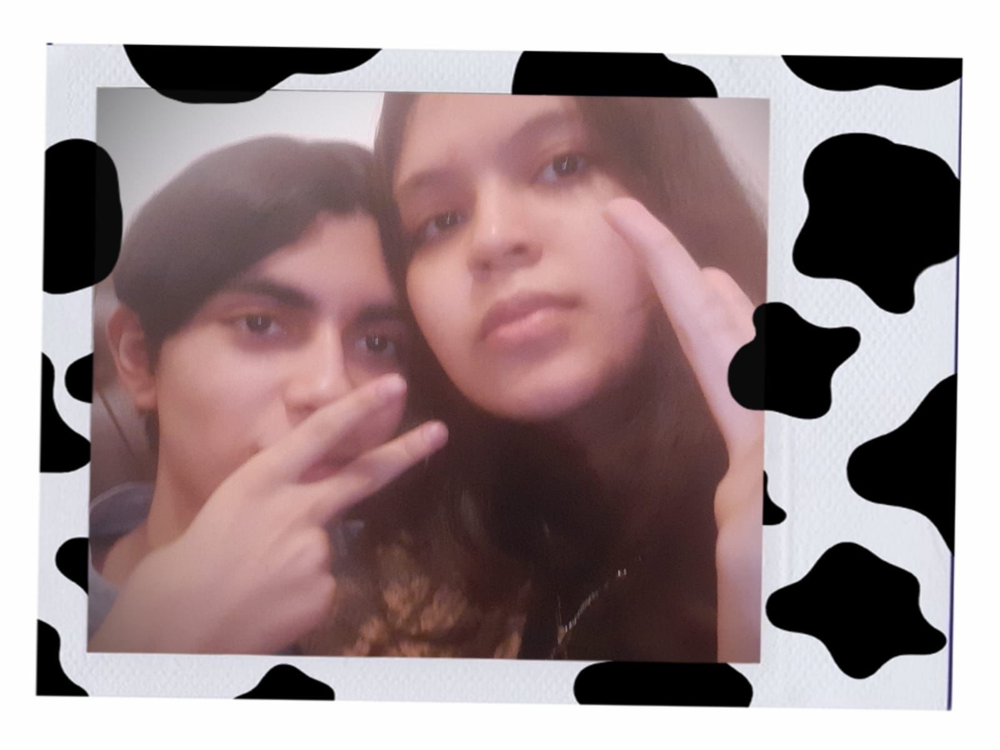

Mi nombre es Isaac Jackir Velásquez Valladares, tengo 17 años(en este año cumplo 18) vivo en Comayagua,
Honduras y estudio en el colegio La Inmaculada.
Me describiria a mi mismo como una persona tranquila y que no le gustan mucho los problemas, tampoco soy una persona muy
sociable, prefiero pasar el tiempo con mi grupo de amigos antes que hablar con personas nuevas y por lo general no me siento
muy cómodo con grandes grupos de personas.
Por lo general soy bastante serio y callado aunque cuando estoy con mis amigos hablo más y no soy tan serio como normalmente.
Soy bastante crítico y exigente con las cosas y no tengo mucha paciencia. No me gusta tomarme fotos y por eso mismo todas las
fotos que tengo son con mis amigos o mi pareja.
Uno de mis sueños es estudiar psicologia y poder vivir en otro país, aunque tambien me gustan mucho las cosas relacionadas con
la tecnología por lo que me gustaría aprender todo lo que pueda sobre ello. |
 |